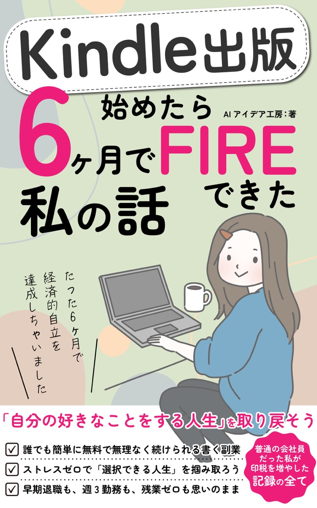

FIREの本質は「金額」ではなく「選択権」
完全FIREではなく、FIを先に取りに行く。会社を辞めるかどうかより、「辞められる状態」を作ることに焦点を当てます。
BOOK GUIDE
会社員としての苦しさから、AIとKindle出版による副業収入、そして会社に依存しない心の余裕までを一冊にまとめています。

完全FIREではなく、FIを先に取りに行く。会社を辞めるかどうかより、「辞められる状態」を作ることに焦点を当てます。
印税のストック性、本業との両立、AIによる執筆効率化。会社員が始めやすい副業としての理由を語ります。
月3万円、月10万円、月20万円。収入の変化だけでなく、心の余裕がどう積み上がったのかを描きます。
日曜日の憂鬱が消え、会社への見方も変わる。副業収入が自信と時間の使い方を変えていきます。
評価への執着が消えると、過剰な完璧主義から抜け出せる。会社を利用する視点が生まれます。
小さく始め、好きなことで続ける。FIはゴールではなく、選べる人生に入るための分岐点です。